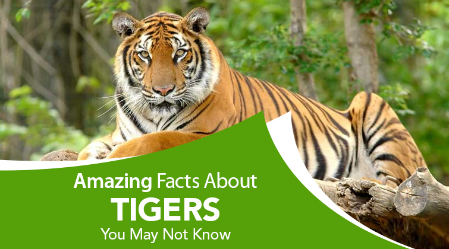

National Animal Tiger
The Tiger is the national animal of India. Tigers are famous for their orange and black striped skin. Tigers are an integral part of a balanced ecosystem. Due to human intervention, there has been a steep decrease in the number of tigers in recent years.Tigers are powerful hunters with sharp teeth, strong jaws and agile bodies. They are the largest terrestrial mammal whose diet consists entirely of meat; the largest tiger ever recorded was an Amur tiger. The tiger's closest relative is the lion. In fact, without fur, it is difficult to distinguish a tiger from a lion. Tigers are fascinating animals, from their unique stripe patterns to their almighty roar they represent strength and power all while being the most endangered big cat in the world. Sadly, due to human activity like hunting, the global tiger population has dropped by 97% in the last 100 years. Now, the remaining tigers call only the following 13 countries home: India, Nepal, Bhutan, Bangladesh, Myanmar, Russia, China, Thailand, Malaysia, Indonesia, Cambodia, Laos, and Vietnam.